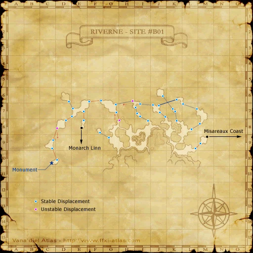

Description
Riverne - Site #B01 is a dungeon in Tavnazian Archipelago.
Map

Involved in Quests / Missions
| Quest / Mission | Type | Starter | Location |
|---|---|---|---|
| Fly High | General | Ferchinne | Tavnazian Safehold (G-9) |
| Go! Go! Gobmuffin! | Map | Epinolle | Tavnazian Safehold (F-8) |
| Spice Gals | General | Rouva | Southern San d'Oria (I-8) |
| Storms of Fate | General | Esha'ntarl | Ru'Lude Gardens |
Notorious Monsters
| Name | Level | Drops | Steal | Family | Spawns | Notes |
|---|---|---|---|---|---|---|
| Boroka | 56-60 | Hippogryph Tailfeather Hippogryph Feather Auditory Torque Boroka Earring Horomusha Kote Skulker's Cape | — |  HippogryphsImage source HippogryphsImage source | — | — |
| Imdugud | 56-60 | Heavy Lance Knightly Earring | — | HippogryphsImage source | — | — |
| Unstable Cluster | 56-57 | Cluster Ash Cluster Core Soboro Sukehiro | — |  ClustersImage source ClustersImage source | — | — |
Regular Monsters
| Name | Level | Drops | Steal | Family | Spawns | Notes |
|---|---|---|---|---|---|---|
| Nimbus Hippogryph | 49-52 | Hippogryph Feather Hippogryph Tailfeather | — | HippogryphsImage source | 21 | A, T(S) |
| Lesser Roc | 49-53 | Giant Bird Feather Giant Bird Plume | — |  RocsImage source RocsImage source | 27 | L |
| Pyrodrake | 50-55 | Giant Scale Wyvern Skin Wyvern Wing | — |  WyvernsImage source WyvernsImage source | 13 | A, S |
| Strato Hippogryph | 54-57 | Hippogryph Feather Hippogryph Tailfeather | — | HippogryphsImage source | 22 | A, T(S) |
| Lunantishee | 55-58 | Malboro Vine | — |  MorbolsImage source MorbolsImage source | 23 | A, H |
| Nitro Cluster | 56-58 | Cluster Ash Cluster Core Clustered Tar | Cluster Core | ClustersImage source | 17 | A, S, M |
 Air ElementalImage source Air ElementalImage source | 57-64 | Wind Cluster | — | Elementals | 3 | During wind weather; A, M |
 Thunder ElementalImage source Thunder ElementalImage source | 57-64 | Lightning Cluster | — | Elementals | 3 | During lightning weather; A, M |
| Ignidrake | 58-60 | Giant Scale Wyvern Skin | Giant Scale | WyvernsImage source | 14 | A, S |
Event Monsters
| Name | Level | Drops | Steal | Family | Spawns | Notes |
|---|---|---|---|---|---|---|
| Book Browser Bokabraq | — | — | — |  GoblinsImage source GoblinsImage source | 1 | Spawned Quest: Go! Go! Gobmuffin! |
| Chemical Cook Chemachiq | — | — | — | GoblinsImage source | 1 | Spawned Quest: Go! Go! Gobmuffin! |
| Spell Spitter Spiluspok | — | — | — | GoblinsImage source | 1 | Spawned Quest: Go! Go! Gobmuffin! |
| Bahamut | — | — | — |  AvatarsImage source AvatarsImage source | 1 | Spawned by quest: Storms of Fate; A, T(S) |
| Bahamut | — | — | — | AvatarsImage source | 1 | Spawned by BCNM: The Wyrmking Descends; A, T(S) |
| Jormungand | — | — | — |  WyrmsImage source WyrmsImage source | 1 | Spawned by BCNM: The Wyrmking Descends; Assists: Bahamut; A, T(S) |
| Ouryu | — | — | — | WyrmsImage source | 1 | Spawned by BCNM: The Wyrmking Descends; Assists: Bahamut; A, T(S) |
 Earth ElementalImage source Earth ElementalImage source | — | — | — | Elementals | 1 | Spawned by BCNM: The Wyrmking Descends; Assists: Ouryu; A, T(M) |
 Water ElementalImage source Water ElementalImage source | — | — | — | Elementals | 1 | Spawned by BCNM: The Wyrmking Descends; Assists: Ouryu; A, T(M) |
| Ziryu | — | — | — |  WormsImage source WormsImage source | 1 | Spawned by BCNM: The Wyrmking Descends; Assists: Ouryu; A, L, T(H) |
| Tiamat | — | — | — | WyrmsImage source | 1 | Spawned by BCNM: The Wyrmking Descends; Assists: Bahamut; A, T(S) |
| Vrtra | — | — | — | WyrmsImage source | 1 | Spawned by BCNM: The Wyrmking Descends; Assists: Bahamut; A, T(S) |
| Airi | — | — | — |  GhostsImage source GhostsImage source | 2 | Spawned by BCNM: The Wyrmking Descends; Assists: Vrtra; A, L, T(H), HP |
| Iruci | — | — | — |  SkeletonsImage source SkeletonsImage source | 2 | Spawned by BCNM: The Wyrmking Descends; Assists: Vrtra; A, L, T(H), HP |
| Pey | — | — | — | SkeletonsImage source | 2 | Spawned by BCNM: The Wyrmking Descends; Assists: Vrtra; A, L, T(H), HP |
Story walkthroughs in this area
| Story | Mission / quest |
|---|---|
| RoZ Q1 | Storms of Fate |
| CoP 4-1 | Sheltering Doubt |
| CoP 4-2 | The Savage |
References
External references describe their own server or retail rules. Documented Zenith changes take precedence.
Map credits: Map 1 — HorizonXI Wiki. Original game maps © SQUARE ENIX; redrawn maps retain the credited authorship and license.